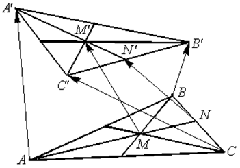

П 4.1 №2
В пространстве заданы треугольники  и
;
и
;  и
– точки пересечения медиан этих
треугольников соответственно. Разложите вектор по
базису векторов , ,
.
и
– точки пересечения медиан этих
треугольников соответственно. Разложите вектор по
базису векторов , ,
.
и
; и
– точки пересечения медиан этих
треугольников соответственно. Разложите вектор по
базису векторов , ,
.РЕШЕНИЕ:
Пусть  – середина стороны
– середина стороны
 , –
середина стороны .
, –
середина стороны .
– середина стороны
, –
середина стороны . .
Найдем:
; ;
;;
; ;.

После последовательных подстановок
то есть .
Ответ: .